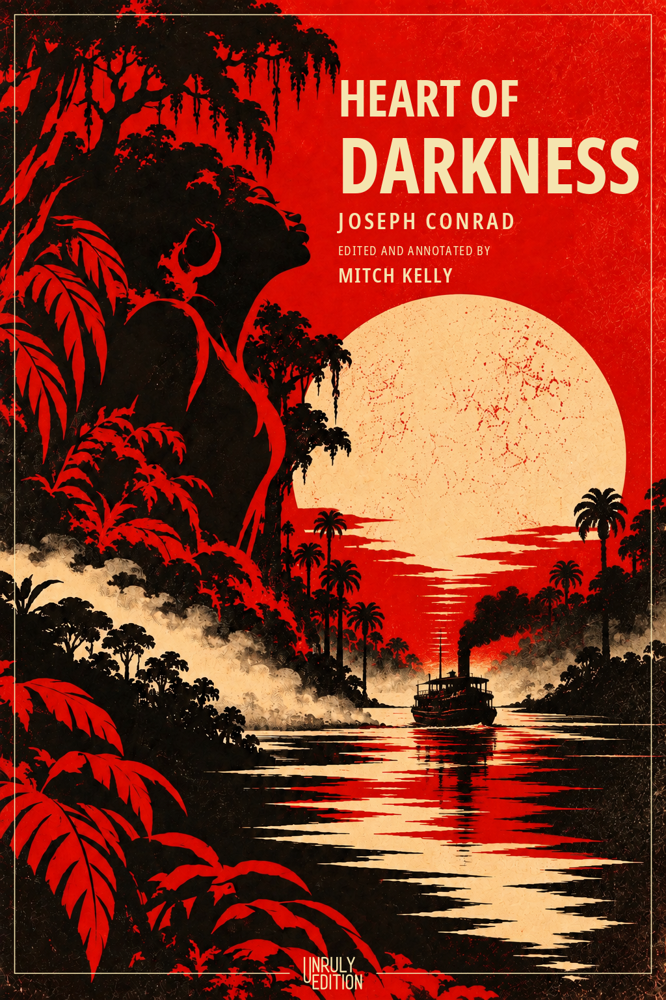

An Unruly Edition
Heart of Darkness
Heart of Darkness has spent more than a century provoking arguments about empire, race, violence, exploitation, and the ways powerful institutions explain themselves.
The Unruly Edition will return to Conrad’s text without trying to resolve those arguments for the reader. Editorial material and annotations will provide historical context, trace the forces surrounding the work and its reception, and make room for the contradictions that have kept the book alive.
In Development
